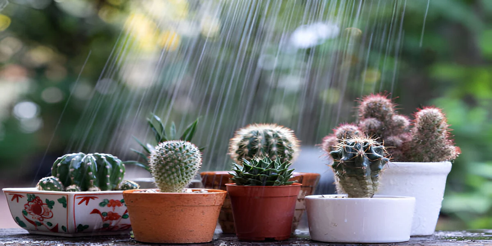
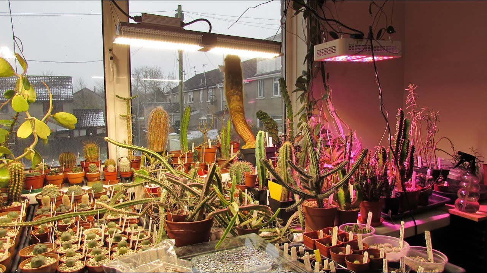

Cactus Care Tips
Watering
Cacti require minimal watering. Water them every 2-3 weeks during the growing season and reduce in winter.
Light
Place your cactus in a bright spot with plenty of indirect sunlight. Direct sunlight can scorch the plant.
Soil
Use well-draining soil specifically designed for cacti and succulents to prevent root rot.
Temperature
Cacti thrive in warm temperatures. Keep them in a range of 70°F to 100°F (21°C to 38°C).